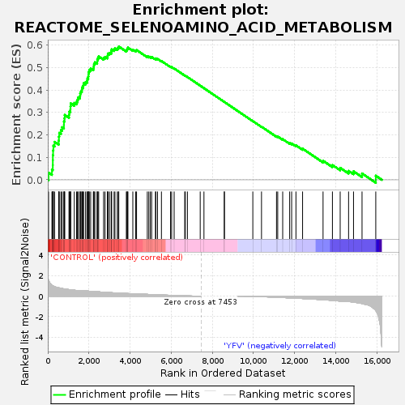
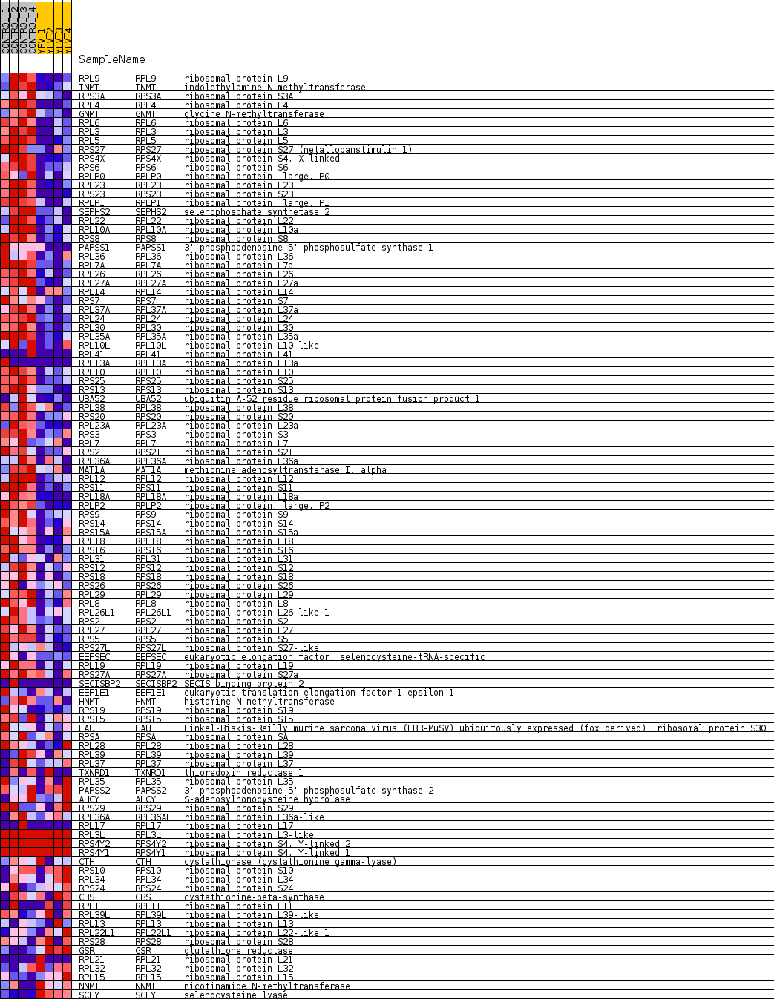
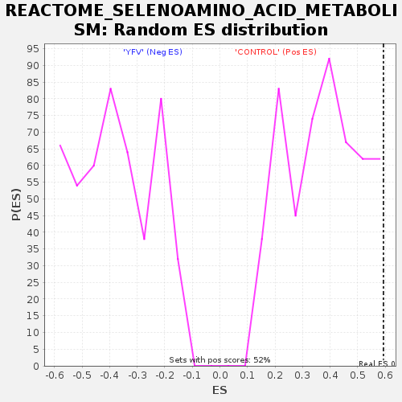

| Dataset | MATRIZ_GSE99081_collapsed_to_symbols.gsea_CLASE_99081.cls#CONTROL_versus_YFV |
| Phenotype | gsea_CLASE_99081.cls#CONTROL_versus_YFV |
| Upregulated in class | CONTROL |
| GeneSet | REACTOME_SELENOAMINO_ACID_METABOLISM |
| Enrichment Score (ES) | 0.59332746 |
| Normalized Enrichment Score (NES) | 1.5615215 |
| Nominal p-value | 0.034416825 |
| FDR q-value | 0.7730295 |
| FWER p-Value | 0.97 |

| SYMBOL | TITLE | RANK IN GENE LIST | RANK METRIC SCORE | RUNNING ES | CORE ENRICHMENT | |
|---|---|---|---|---|---|---|
| 1 | RPL9 | ribosomal protein L9 | 39 | 1.536 | 0.0317 | Yes |
| 2 | INMT | indolethylamine N-methyltransferase | 201 | 1.067 | 0.0454 | Yes |
| 3 | RPS3A | ribosomal protein S3A | 243 | 1.002 | 0.0652 | Yes |
| 4 | RPL4 | ribosomal protein L4 | 245 | 1.000 | 0.0873 | Yes |
| 5 | GNMT | glycine N-methyltransferase | 247 | 0.998 | 0.1094 | Yes |
| 6 | RPL6 | ribosomal protein L6 | 258 | 0.994 | 0.1309 | Yes |
| 7 | RPL3 | ribosomal protein L3 | 271 | 0.979 | 0.1519 | Yes |
| 8 | RPL5 | ribosomal protein L5 | 331 | 0.928 | 0.1689 | Yes |
| 9 | RPS27 | ribosomal protein S27 (metallopanstimulin 1) | 531 | 0.815 | 0.1746 | Yes |
| 10 | RPS4X | ribosomal protein S4, X-linked | 540 | 0.811 | 0.1921 | Yes |
| 11 | RPS6 | ribosomal protein S6 | 556 | 0.801 | 0.2090 | Yes |
| 12 | RPLP0 | ribosomal protein, large, P0 | 638 | 0.765 | 0.2210 | Yes |
| 13 | RPL23 | ribosomal protein L23 | 694 | 0.744 | 0.2341 | Yes |
| 14 | RPS23 | ribosomal protein S23 | 783 | 0.708 | 0.2444 | Yes |
| 15 | RPLP1 | ribosomal protein, large, P1 | 785 | 0.707 | 0.2600 | Yes |
| 16 | SEPHS2 | selenophosphate synthetase 2 | 812 | 0.699 | 0.2739 | Yes |
| 17 | RPL22 | ribosomal protein L22 | 823 | 0.695 | 0.2888 | Yes |
| 18 | RPL10A | ribosomal protein L10a | 1031 | 0.636 | 0.2901 | Yes |
| 19 | RPS8 | ribosomal protein S8 | 1045 | 0.631 | 0.3033 | Yes |
| 20 | PAPSS1 | 3'-phosphoadenosine 5'-phosphosulfate synthase 1 | 1099 | 0.618 | 0.3137 | Yes |
| 21 | RPL36 | ribosomal protein L36 | 1103 | 0.618 | 0.3273 | Yes |
| 22 | RPL7A | ribosomal protein L7a | 1114 | 0.617 | 0.3403 | Yes |
| 23 | RPL26 | ribosomal protein L26 | 1288 | 0.575 | 0.3424 | Yes |
| 24 | RPL27A | ribosomal protein L27a | 1398 | 0.551 | 0.3479 | Yes |
| 25 | RPL14 | ribosomal protein L14 | 1446 | 0.539 | 0.3570 | Yes |
| 26 | RPS7 | ribosomal protein S7 | 1477 | 0.534 | 0.3670 | Yes |
| 27 | RPL37A | ribosomal protein L37a | 1562 | 0.517 | 0.3733 | Yes |
| 28 | RPL24 | ribosomal protein L24 | 1574 | 0.514 | 0.3840 | Yes |
| 29 | RPL30 | ribosomal protein L30 | 1608 | 0.507 | 0.3932 | Yes |
| 30 | RPL35A | ribosomal protein L35a | 1658 | 0.502 | 0.4013 | Yes |
| 31 | RPL10L | ribosomal protein L10-like | 1670 | 0.501 | 0.4118 | Yes |
| 32 | RPL41 | ribosomal protein L41 | 1720 | 0.500 | 0.4198 | Yes |
| 33 | RPL13A | ribosomal protein L13a | 1740 | 0.500 | 0.4298 | Yes |
| 34 | RPL10 | ribosomal protein L10 | 1836 | 0.500 | 0.4350 | Yes |
| 35 | RPS25 | ribosomal protein S25 | 1908 | 0.495 | 0.4416 | Yes |
| 36 | RPS13 | ribosomal protein S13 | 1927 | 0.494 | 0.4514 | Yes |
| 37 | UBA52 | ubiquitin A-52 residue ribosomal protein fusion product 1 | 1969 | 0.488 | 0.4597 | Yes |
| 38 | RPL38 | ribosomal protein L38 | 1981 | 0.487 | 0.4699 | Yes |
| 39 | RPS20 | ribosomal protein S20 | 1985 | 0.486 | 0.4805 | Yes |
| 40 | RPL23A | ribosomal protein L23a | 2018 | 0.480 | 0.4892 | Yes |
| 41 | RPS3 | ribosomal protein S3 | 2085 | 0.470 | 0.4955 | Yes |
| 42 | RPL7 | ribosomal protein L7 | 2215 | 0.454 | 0.4976 | Yes |
| 43 | RPS21 | ribosomal protein S21 | 2236 | 0.450 | 0.5064 | Yes |
| 44 | RPL36A | ribosomal protein L36a | 2245 | 0.449 | 0.5159 | Yes |
| 45 | MAT1A | methionine adenosyltransferase I, alpha | 2288 | 0.443 | 0.5231 | Yes |
| 46 | RPL12 | ribosomal protein L12 | 2400 | 0.425 | 0.5257 | Yes |
| 47 | RPS11 | ribosomal protein S11 | 2405 | 0.425 | 0.5349 | Yes |
| 48 | RPL18A | ribosomal protein L18a | 2439 | 0.421 | 0.5422 | Yes |
| 49 | RPLP2 | ribosomal protein, large, P2 | 2474 | 0.416 | 0.5493 | Yes |
| 50 | RPS9 | ribosomal protein S9 | 2713 | 0.381 | 0.5430 | Yes |
| 51 | RPS14 | ribosomal protein S14 | 2782 | 0.370 | 0.5470 | Yes |
| 52 | RPS15A | ribosomal protein S15a | 2897 | 0.353 | 0.5478 | Yes |
| 53 | RPL18 | ribosomal protein L18 | 2912 | 0.352 | 0.5547 | Yes |
| 54 | RPS16 | ribosomal protein S16 | 2921 | 0.351 | 0.5620 | Yes |
| 55 | RPL31 | ribosomal protein L31 | 2998 | 0.343 | 0.5650 | Yes |
| 56 | RPS12 | ribosomal protein S12 | 3083 | 0.334 | 0.5672 | Yes |
| 57 | RPS18 | ribosomal protein S18 | 3094 | 0.332 | 0.5739 | Yes |
| 58 | RPS26 | ribosomal protein S26 | 3104 | 0.332 | 0.5807 | Yes |
| 59 | RPL29 | ribosomal protein L29 | 3224 | 0.317 | 0.5804 | Yes |
| 60 | RPL8 | ribosomal protein L8 | 3265 | 0.313 | 0.5849 | Yes |
| 61 | RPL26L1 | ribosomal protein L26-like 1 | 3380 | 0.301 | 0.5845 | Yes |
| 62 | RPS2 | ribosomal protein S2 | 3429 | 0.296 | 0.5881 | Yes |
| 63 | RPL27 | ribosomal protein L27 | 3451 | 0.294 | 0.5933 | Yes |
| 64 | RPS5 | ribosomal protein S5 | 3819 | 0.257 | 0.5763 | No |
| 65 | RPS27L | ribosomal protein S27-like | 3849 | 0.254 | 0.5801 | No |
| 66 | EEFSEC | eukaryotic elongation factor, selenocysteine-tRNA-specific | 3872 | 0.252 | 0.5844 | No |
| 67 | RPL19 | ribosomal protein L19 | 3896 | 0.251 | 0.5885 | No |
| 68 | RPS27A | ribosomal protein S27a | 4134 | 0.232 | 0.5790 | No |
| 69 | SECISBP2 | SECIS binding protein 2 | 4270 | 0.222 | 0.5756 | No |
| 70 | EEF1E1 | eukaryotic translation elongation factor 1 epsilon 1 | 4315 | 0.218 | 0.5777 | No |
| 71 | HNMT | histamine N-methyltransferase | 4838 | 0.172 | 0.5491 | No |
| 72 | RPS19 | ribosomal protein S19 | 4912 | 0.165 | 0.5483 | No |
| 73 | RPS15 | ribosomal protein S15 | 4986 | 0.160 | 0.5473 | No |
| 74 | FAU | Finkel-Biskis-Reilly murine sarcoma virus (FBR-MuSV) ubiquitously expressed (fox derived); ribosomal protein S30 | 5050 | 0.154 | 0.5468 | No |
| 75 | RPSA | ribosomal protein SA | 5235 | 0.135 | 0.5384 | No |
| 76 | RPL28 | ribosomal protein L28 | 5254 | 0.133 | 0.5403 | No |
| 77 | RPL39 | ribosomal protein L39 | 5334 | 0.127 | 0.5382 | No |
| 78 | RPL37 | ribosomal protein L37 | 5525 | 0.111 | 0.5289 | No |
| 79 | TXNRD1 | thioredoxin reductase 1 | 5967 | 0.079 | 0.5033 | No |
| 80 | RPL35 | ribosomal protein L35 | 6021 | 0.074 | 0.5017 | No |
| 81 | PAPSS2 | 3'-phosphoadenosine 5'-phosphosulfate synthase 2 | 6143 | 0.065 | 0.4956 | No |
| 82 | AHCY | S-adenosylhomocysteine hydrolase | 6657 | 0.029 | 0.4645 | No |
| 83 | RPS29 | ribosomal protein S29 | 6686 | 0.027 | 0.4633 | No |
| 84 | RPL36AL | ribosomal protein L36a-like | 6788 | 0.022 | 0.4575 | No |
| 85 | RPL17 | ribosomal protein L17 | 7410 | 0.000 | 0.4191 | No |
| 86 | RPL3L | ribosomal protein L3-like | 7592 | 0.000 | 0.4078 | No |
| 87 | RPS4Y2 | ribosomal protein S4, Y-linked 2 | 8583 | 0.000 | 0.3465 | No |
| 88 | RPS4Y1 | ribosomal protein S4, Y-linked 1 | 8584 | 0.000 | 0.3465 | No |
| 89 | CTH | cystathionase (cystathionine gamma-lyase) | 9968 | -0.024 | 0.2613 | No |
| 90 | RPS10 | ribosomal protein S10 | 10390 | -0.051 | 0.2363 | No |
| 91 | RPL34 | ribosomal protein L34 | 11119 | -0.112 | 0.1937 | No |
| 92 | RPS24 | ribosomal protein S24 | 11178 | -0.118 | 0.1927 | No |
| 93 | CBS | cystathionine-beta-synthase | 11420 | -0.141 | 0.1809 | No |
| 94 | RPL11 | ribosomal protein L11 | 11759 | -0.170 | 0.1638 | No |
| 95 | RPL39L | ribosomal protein L39-like | 11855 | -0.179 | 0.1618 | No |
| 96 | RPL13 | ribosomal protein L13 | 12065 | -0.199 | 0.1533 | No |
| 97 | RPL22L1 | ribosomal protein L22-like 1 | 12387 | -0.232 | 0.1386 | No |
| 98 | RPS28 | ribosomal protein S28 | 13382 | -0.348 | 0.0847 | No |
| 99 | GSR | glutathione reductase | 13838 | -0.416 | 0.0658 | No |
| 100 | RPL21 | ribosomal protein L21 | 14215 | -0.485 | 0.0532 | No |
| 101 | RPL32 | ribosomal protein L32 | 14623 | -0.523 | 0.0396 | No |
| 102 | RPL15 | ribosomal protein L15 | 14863 | -0.582 | 0.0377 | No |
| 103 | NNMT | nicotinamide N-methyltransferase | 15277 | -0.727 | 0.0283 | No |
| 104 | SCLY | selenocysteine lyase | 15945 | -1.407 | 0.0182 | No |

